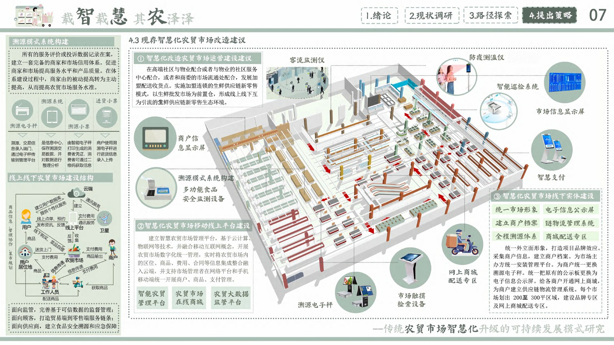

多角色需求
居民追求新鲜与效率，商户关注经营成本，管理者需要透明、可追溯的运行数据。
Jean Zhu · Project 05 / 05
返回作品集 ↗Service research · Urban system
围绕传统农贸市场的真实行为与痛点，研究线上线下融合、健康管理与社区公共空间协同的智慧化升级路径。

01 / Research
调研关注市场认知、使用频率、消费路径和典型痛点。智慧化并非增加屏幕，而是减少信息断点、提升信任，并保留农贸市场原有的人情味。
居民追求新鲜与效率，商户关注经营成本，管理者需要透明、可追溯的运行数据。
价格、产地、检测与摊位信誉应在同一条消费路径中被清晰理解。
市场既是采购设施，也承载邻里交流、地方饮食与社区生活。
Online × Offline
线上解决时间与信息效率，线下保留挑选、交流与即时反馈。两条路径通过订单、检测、配送与社区服务衔接为完整体验。
Needs synthesis
将分散的访谈与数据聚合为数字化、社区化和健康化三类需求，再对应到空间、产品和运营策略。
02 / System proposal
最终方案把空间更新、智慧管理、公共服务与生态策略叠加在同一市场系统中，让技术隐藏在顺畅的日常体验之后。
市场与街区之间形成可停留、可交流的公共空间，延伸社区活动时间。
检测、溯源、价格与订单信息在关键触点清晰呈现，降低认知成本。
环境监测、分类回收与商户管理共同支持市场的长期健康运行。